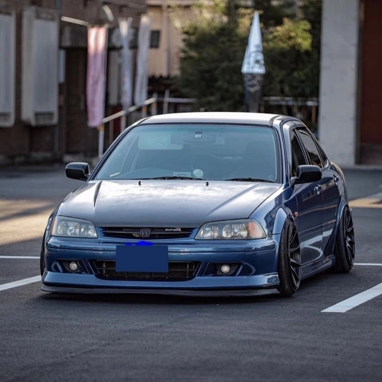
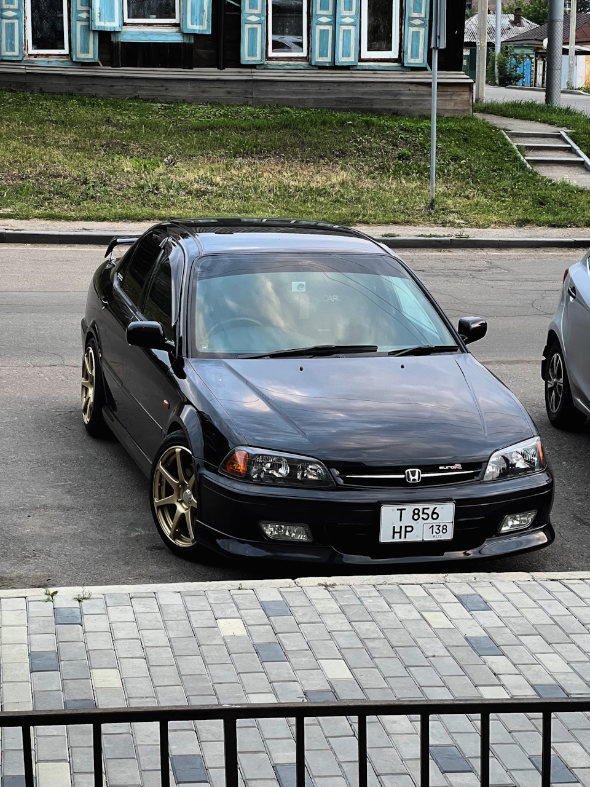
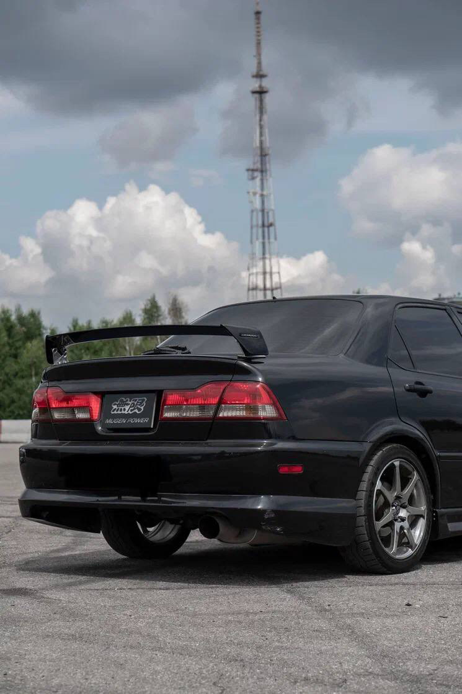

Концепция: Европейский шик для Японии
В 1997 году, одновременно с глобальным Accord шестого поколения (CF), Honda представила на внутреннем японском рынке уникальную модель —
Honda Torneo. Это не был просто Accord с другим шильдиком. Философия Torneo заключалась в том, чтобы предложить японскому покупателю
«европейски» стильный, более спортивный и визуально агрессивный вариант семейного седана, сохранив всю техническую начинку и комфорт Accord.
Платформа и позиционирование
- Torneo делил с Accord шестого поколения единую глобальную платформу CF, всю механическую часть, интерьер и технологические решения.
- Ключевым отличием был экстерьер. Если Accord имел сдержанный, элегантный дизайн, то Torneo получил совершенно иную переднюю часть: узкие блок-фары, более крупную и выразительную решетку радиатора и агрессивный передний бампер.
- Модель позиционировалась как более молодежная и динамичная альтернатива классическому Accord, делая ставку на индивидуальность и спортивный имидж.
Базовые модификации и двигатели
На старте продаж Torneo предлагался с теми же двигателями, что и Accord:
- F23A: Атмосферный 2.3-литровый двигатель (150-155 л.с.) для комплектаций Si.
- H22A: Легендарный 2.2-литровый DOHC VTEC (190-200 л.с.) для спортивных версий SiR и SiR-T (с турбонаддувом от H23A).
- Привод — исключительно передний (FF).


Уникальный дизайн: «Лицо» Torneo
- Главной «фишкой» дизайна стали узкие, вытянутые четыре круглые фары, стилистически перекликавшиеся с Honda Integra DC2 того же периода. Этот дизайнерский ход был радикальным отходом от сдержанного образа Accord и создавал хищный, цепкий взгляд, мгновенно выделявший автомобиль в потоке.
- Задняя часть также отличалась от Accord формой фонарей и более спортивным бампером, сохраняя при этом общие семейные черты и практичность.
- Отдельно стоит упомянуть версию Torneo Sirio — более роскошную и сдержанную модификацию с другой решеткой радиатора, которая апеллировала к покупателям, ценящим элегантность, но желавшим уникальности в рамках модели.
Техническая основа: Наследник Accord
- Высокожесткий кузов с отличной шумоизоляцией обеспечивал тишину и комфорт, характерный для класса.
- Независимая подвеска: спереди — стойки McPherson, сзади — многорычажная схема. На версии Euro R применялась более совершенная и дорогая схема Double Wishbone (на двойных поперечных рычагах) спереди и сзади, позаимствованная у более спортивных моделей Honda, что кардинально улучшало точность управляемости.
- Автомобиль оснащался передовыми на тот момент системами: ABS, VSA (система стабилизации), подушки безопасности, что делало его безопасным и современным.
Культовая вершина: Honda Torneo Euro R (CL1, 1998-2001)
В 1998 году линейка увенчалась появлением флагманской модели
Torneo Euro R (CL1), которая стала квинтэссенцией инженерной мысли Honda того периода для седанов.
- Ее сердцем стал специально доработанный высокооборотный двигатель H22A (H22A7) мощностью 220 л.с. при 7200 об/мин с красной зоной в 8000 об/мин. Мотор имел облегченные компоненты, полированные впускные каналы и настроенный впуск для максимальной отдачи.
- Устанавливалась исключительно 5-ступенчатая механическая КПП с близкими передаточными числами и винтовым дифференциалом повышенного трения (Helical LSD), что сводило к минимуму пробуксовку передних колес при интенсивном разгоне.
- Шасси было кардинально доработано: усиленные амортизаторы, более жесткие пружины, стабилизаторы, а также та самая подвеска на двойных поперечных рычагах спереди и сзади, обеспечивавшая невероятную обратную связь и устойчивость.
- Экстерьер отличали легкие 16-дюймовые диски, спойлер на багажнике и шильдик «Euro R», а также отсутствие излишнего хрома.
- Интерьер получил фирменные спортивные сиденья Recaro с развитой боковой поддержкой, титановую шарообразную ручку КПП, кожаную обшивку руля и минималистичную отделку без лишнего оборудования для снижения веса.
Феномен «японского европейца»
Honda Torneo осталась в истории как уникальный казус и предмет охоты для ценителей. Это был очень качественный, технологичный и быстрый седан, который из-за своей эксклюзивности (только для Японии) и спортивного характера не получил всемирной славы Accord. Его феномен — в идеально рассчитанной двойственности. Для японского рынка конца 90-х он стал хитрой маркетинговой возможностью: купить респектабельный и комфортабельный Accord, но в дерзкой, «европейской» одежде, которая ассоциировалась с индивидуальностью и динамикой. Визуально он открещивался от консервативного имиджа «семейного корабля», предлагая вместо этого образ солидного, но не скучного спортивного седана. При этом под капотом версии Euro R скрывался настоящий гоночный характер, делавший её заводским «спецназом» для дорог общего пользования. Эта модель не пыталась завоевать весь мир — она была создана для узкой, понимающей аудитории, что в итоге и сформировало её культовый, почти мифический статус среди поклонников марки.
Плюсы и минусы владения сегодня
Плюсы:
- Эксклюзивность и редкий, узнаваемый дизайн.
- Высочайшая техническая оснащенность и качество сборки уровня Accord.
- В версии Euro R — характеристики и драйверские качества, близкие к легендарной Integra Type R, но в кузове 4-дверного седана.
- Высокая жесткость кузова и отличная управляемость.
Минусы и «болевые точки»:
- Крайняя редкость и сложность поиска на рынке, особенно версии Euro R.
- Практически полное отсутствие оригинальных запчастей для кузова (фары, бамперы, элементы оптики). Ремонт после ДТП — огромная проблема.
- Все «возрастные» болезни Accord CF: возможные проблемы с электроникой, износ резинотехнических изделий.
- Двигатель H22A в Euro R: Требователен к обслуживанию, качеству масла, высок риск прогара клапанов при неграмотной эксплуатации.
- Правый руль (для рынков СНГ).
Культурное значение и коллекционная ценность
Honda Torneo, и особенно её вершина — версия Euro R, навсегда останется в истории как автомобиль для истинных гурманов и знатоков японского автопрома. Он представляет собой настоящий «скрытый драгоценный камень» — блестяще инженерную, но не раскрученную массовым медиа-рынком модель. В то время как Civic Type R и Integra Type R стали всемирными иконами, Torneo сохранил ауру эксклюзивного артефакта, созданного исключительно для японского рынка и тех, кто способен оценить его уникальную суть. Этот седан напоминает об эпохе, когда Honda могла позволить себе создавать узконаправленные, технологически совершенные автомобили для конкретной аудитории, не боясь экспериментировать с имиджем в рамках одной платформы. Именно эта редкость, сочетающая в себе практичность кузова седан, высочайшее качество сборки Accord и бескомпромиссный характер спортивной версии Euro R, и формирует его стремительно растущую коллекционную стоимость. Хороший, оригинальный Torneo Euro R сегодня — это не просто машина, а значимый и инвестиционно привлекательный объект для коллекции, символ глубокого понимания марки и пика её инженерной мысли конца 1990-х годов.

 89081317488
89081317488

 8(908)131-74-88
8(908)131-74-88.svg) fayther2@yandex.ru
fayther2@yandex.ru